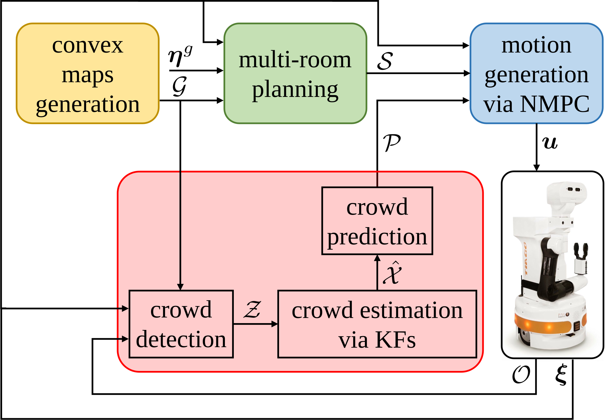

Project Outline
This paper presents a sensor-based Model Predictive Control (MPC) scheme designed for safe crowd navigation in non-convex environments. The proposed framework decomposes the free space into a set of overlapping convex regions to construct a topological graph, enabling a high-level planner to compute optimal sequences of traversable areas. To effectively perceive the crowd, the system employs a robust perception pipeline that fuses 2D LiDAR data with semantic information from an RGB-D camera, utilizing Kalman Filters to estimate and predict human motion. These predictions are integrated into an MPC controller which generate robot commands by enforcing safety through discrete-time Control Barrier Functions, ensuring the robot avoids collisions while remaining within navigable regions. The modular architecture integrates planning, perception, and control into a unified system adaptable to different platforms and sensor configurations.
Architecture

Simulations
The following Gazebo simulations show the TIAGo mobile manipulator navigating various multi-room environments populated with static obstacles and moving humans, while being empowered by the proposed MPC scheme.
Experiments
Clips of the real robot traversing doors and avoiding humans in diverse dynamic environments.
Full Project Video
Watch the following video for a comprehensive overview of the project.